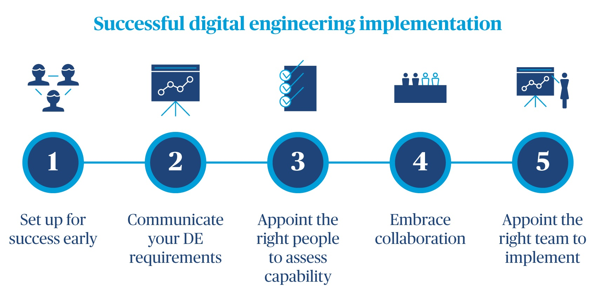

Realising savings: five key points for successful digital engineering implementation

Guilliam Oberholster
Associate Director, Mining and Metals
In today’s turbulent economic climate our industry needs fast, efficient, reliable and cost effective design and project deliverables. It’s a tall order for an industry which has a reputation of being wasteful and often which delivers assets late. Our industry has recognised that Building Information Modelling (BIM) or Digital Engineering (DE) is a process which has proven to yield significant savings in terms of time and cost while simultaneously laying the foundations for a digital twin.
But why then do we still encounter resistance to adoption? And, why when implemented, do we rarely realise the benefits?
Common barriers to adoption
Successful implementation is often not achieved due to various barriers, the following represent some of the most common:
- Standards – Depending on the sector and region, a complete and specific standard may not exist, and if available they are rarely adopted consistently.
- Cost – When considering the short term cost of software and training, organisations may be averse to making the investment without a proven or guaranteed ROI.
- Interoperability – While progress has been made in terms of common file formats some software vendors have been unwilling to collaborate, and those who have are mixed in terms of their maturity.
- Culture and skill change – Consultants who have been within the industry for a number of years can be resistant to adopt a new skill set, methodology and approach to delivering projects.
- Organisational issues – Organisations may be reluctant to embrace change, concerned that it could impact professional liability and require a costly and timely revision to internal processes.
- Commercial and Legal issues – Organisations identify risks associated with professional liability, ownership of the BIM data, intellectual property rights, licencing, control and access to the information. The continued use of vague and undefined terms in contracts has led to The Winfield Rock Report which provides a detailed review of the legal community’s understanding and position on BIM.

There are five key points for successful BIM or DE implementation on projects:
1. Set up for success early
All too often we hear of projects which incorporate BIM and have an element of digital engineering but fail to drive efficiency and benefit the project.
Typically this is because the project didn’t carry out an advisory stage prior to tendering, assessment and engagement of the project team. When this is the case consultants who have BIM or DE experience may use all the right tools and procedures but don’t do so with the intent of specifically achieving a project BIM goal or requirement. As a result the project may have a 3D model but it isn’t suitable for other BIM uses without significant amendment or further works.
Completing an advisory stage ensures the client is aware of the potential BIM uses and the benefits of these to the particular project. The client can then consider which uses align with their project drivers and ensure these are captured in the tender and contract documents.
Ultimately, the advisory stage defines the project objectives and overarching BIM strategy.
2. Communicate your DE requirements
When implementing BIM or DE, the importance of planning cannot be overstated. During the planning phase the client is required to compile a document called The Employers Information Requirements (EIR), which clearly sets out the projects BIM uses, goals and drivers. Depending on the organisations maturity, the document also needs to consider the Organisational Information Requirements (OIR). Organisations which have developed their capability will have requirements which exceed those which are project specific, this may relate to how data should be structured to allow for benchmarking across projects or how data integrates into other systems.
The EIR is issued to tenderers and confirms the clients and project BIM requirements. Clear communication of the BIM requirements early will ensure tenderers are aware of the capability and required skill set. This will ultimately improve the uniformity of tender responses and lead to more competitive tender returns. It will also minimise change of scope and the number of variations while ensuring a more collaborative approach by the project team.
3. Appoint the right people to assess capability
Assessing capability is an important task which identifies the most suitable contractor and project team or, at the very least, highlights a capability gap which may be addressed with training.
Tenderers should respond with a pre-contract BIM Execution Plan (BEP) which outlines how, when and what will be delivered. The BEP provides tenderers the opportunity to address how they will meet the BIM requirements, who they plan to nominate for particular roles and how they intend on collaborating with the project team.
It is important that the client or the tender assessment panel have the capability to assess the pre-contract BEP to ensure the tenderer has correctly interpreted the BIM requirements and responded accordingly. If this is not the case then any deviation should be addressed and corrected or accepted during the tender assessment.
4. Embrace collaboration
Collaboration is often adversely affected by a number of the common barriers to implementation. Organisations that have concerns about intellectual property and legal issues are more reluctant to share information in a manner which will foster collaboration. It is therefore important to identify any potential issues during the pre-contract stage to ensure these can be addressed and settled early.
A number of software vendors have been resistant to collaborate with their competitors and consequently have not complied with industry standards. Software vendors are all competing to secure a greater market share and strategies to achieve this counter a collaborative approach.
It’s imperative to consider common goals early during the pre-contract stage, so that some or all barriers can be addressed with proper planning and all parties can work towards the agreed uses, goals and drivers.
5. Appoint the right team to implement
With project related pressures and deadlines BIM goals and drivers often fall by the wayside. To avoid this, it is critical to implement digital engineering protocols and procedures and then manage the implementation accordingly. While the time and cost of short term set up may exceed more traditional methods, the long term benefit will significantly outperform more common methods and result in greater efficiency and savings.
Project teams need to be structured and capable to support DE implementation, this can be achieved by teams delivering in accordance to their respective roles and requirements.
Making the difference
Successful implementation and management of a DE project will provide structured and accurate datasets, tool and processes which will reduce the turnaround time of project deliverables and increase its accuracy. Ultimately this will result in both time and cost savings.
Simply having access to the right tools and procedures will not guarantee success. A considered and deliberate effort must be made to ensure the intent of the technology and procedures is clear. Delivery of the right data at the right time is also required to drive towards the project BIM goals and objectives and thereby achieving efficiently and savings. These benefits also don’t need to be limited to one project. The capability growth can result in an opportunity to innovate the current business model and open the organisation to further possibilities of digitization, such as data analytics and machine learning.
At Turner & Townsend we have developed QuanTTum, our digital engineering service offering. We work with our clients to provide advisory services which identify their DE objectives and overall strategy. QuanTTum is tailored to consider the key points which will ensure successful delivery of the project BIM or DE goals and objectives.